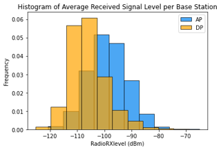

The principal objective of the research was using Machine Learning to forecast base station positions
using data from crowdsourced measurements. Several Deep Learning algorithms were studied and tested.
Finally, a Multilayer Perceptron Algorithm that outperformed state-of-the-art location algorithms
accuracy was succesfully implemented.
The study was limited to the country of Switzerland and the data used was from different mobile
service providers that opperate within the country. This project was carried out in collaboration with Ericsson at
their headquarters located in Kista, Stockholm.
01. Research
In this research project, the principal research questions formulated were two:
- #RQ1: How can neural network-based machine learning models leverage crowdsourced measurements
for accurate and reliable cell tower localization?
- #RQ2: Does this method provide better approximations than state-of-the-art localization algorithms
and available open-source datasets?
The main objectives constructed out of these questions were the following:
- Estimate cell tower locations in mobile infrastructures with Machine Learning
through a crowdsourced measurements-based input.
- Compare the results obtained with open-sourced datasets and traditional location
algorithms used in other state-of-the-art documentation.
The cellular infrastructure aims to divide the intended coverage area into units called cells which tesselate with each other.
Each cell will be getting service from an individual lower-power base station or BS that will be connected to a
Base Station Controller (BSC) which will control a certain number of cells. Theoretically, a cell will have an hexagons
shape to favor tesselation between cells, however in reality is not always like that. The area covered by the cell depend on Several
factors, such as user density, conectivity demand, terrain features and population density.
Mobile Operators do not typically disclose the location of their cell towers or other sensitive information about their network
infrastructure. Reasons vary: the security of their physical infrastructure would be a priority for providing a reliable service. Another primary
concern is competition from the market, the coverage of a certain area is determined by the position of their cell towers, not disclosing this information
keeps a competitive advantage over other providers.
Crowdsourcing measurements involve large datasets of user signal measurements recorded by user equipment in certain areas.
This type has its flaws because user-contributed measurements would be less accurate in some cases than the ones taken with specialized equipment, in terms of owning less specific signal features.
Methods such as Angle of Arrival (AoA), Time of Arrival (ToA) and Time Difference of Arrival (TDoA) can provide a much more accurate location estimation than other methods because of their use of more specific metrics,
but they are impossible to apply in a crowdsourcing environment, as the datasets lack this information, because they cant be recorded by user equipment.
- Centroid: estimates the location of the antenna on the geographical center of all measurements taken.
- Weighted Centroid: Calculating a centroid by weighting each node differently according to a signal metric, in this case the received signal level.
- S-RSS: Relies on the assumption that the antenna is located at the point where the cells strongest RSS is recorded. Thus, this method seems simplistic it is effective in highly populated areas.
02. Data
The data used for this project involves three different dataset:
- An open source dataset: OpenCell Id database is the most complete open source information available.
- Ground truth information from a mobile provider: Provided by Ericsson, ground truth data protected under a Non Disclosure Agreement.
- Crowdsourced measurements: Extracted through a tool used at Ericsson. Two types of signal measurements are selected: Connection Tests (CT) and
Network Information Record (NIR).
The proviver available would be Swisscom and the area of study the country of Switzerland.
Measurement received signal strength ranges across the whole spectrum, being more frequent among the [-110,-90] dbm interval.
It is worthy to highlight a final step in the preprocessing where all measurements with a mean average error superior to 30 km
As in the background stage it was noted that the maximum size of a cell would be around that radius.
The received signal strength recorded does not always linearly decrease with an increase in distance to its cell tower.
Different factors can affect these measurements, such as obstacles, weather conditions, or interferences.
03. Model
After careful consideration, the model chosen for this project is a Multilayer Perceptron Network (MLP).
An Artificial Neural Network model capable of extracting complex relationships between features of training data and capable of
handling large datasets.
This supervised learning algorithm is made of several layers that interconnect the input nodes with the output nodes, it utilizes
backpropagation for the training stage of the network. The neurons in each layer are connected to every network in the following layer and data
will flow forward from the input to the output. The main reason behind this appointment is the model's capability of extracting complex relationships
between features in the training data. Furthermore, this type of neural network can handle heavy and complex datasets like the one at hand, making
adjustments to the weights of each neuron progressively in search of error decline, and performance improvement. In this case, the model is configured
for a multioutput regression problem with 5 layers (4 hidden & 1 output), 180 neurons in the first hidden layer and ReLu and Linear as activation functions.
The model is evaluated under a 5 K-fold cross-validation technique in order to produce averaged performance metrics. The predicted measurements are expressed in
radians, identically to the preprocessing carried in the data before the model simulations.
The model presents excellent performance metrics and minimum losses. Small errors in coordinates prediction can lead to MAE differences of hundreds of meters.
The model predicts a cell tower's most proable location per recorded signal measurement. However, there is only one possible location per cell identifier.
As a means of reducing the significant error discrepancies in certain samples and establishing a unique geographical location for each base station,
a procedure was implemented that computes a centroid alogirthm taken into account all predictions from the same cell tower as anchor nodes.
A significant feature analysis to evaluate feature importance of each individul parameter is carried out through a Permutation Feature Importance approach.
The metrcis chosen to monitor are the mean squared error(MSE) and mean absolute error (MAE). The analysis reveals that statisic features of Received Signal Level or parameters such as the mean RSCP or Lte Cqi
are the most important features to the modeled performance, followed by calculated Weighted Centroid, RSRQ or Standard Centroid.
The proposed algorithm surpasses the best of the computed state-of-the-art location algorithms in terms of average predicion error (m) by almost 30%. Outliers greatly affect the average metric error in each algorithm.
04. Results & Analysis
From the results of the model, several analysis could be conducted. For example, that the relationship between the number of recorded measurements and the accuracy of the prediction in terms of MAE is not linear. However, a higher
number of measurements makes the estimation less sensitive to outliers. From 13782 cell towers present in the test dataset, 9058 were estimated with a precision error of 1 km or less, and there are 4724 cases where the prediction error
surpasses that range.
Promising scenarios where the estimation is very accurate (less than 1 km), present a wide variety of signal strength samples and proximity to the base station.
Defective estimations, that exceed 1 km of MAE generally present poor overall signal strength. Samples recorded close to the cell tower are scarce or non-existent.
There are certain cases where the error is critical (>8km). This cases share a majority of samples recorded kilometers away from the base station, and samples recorded close to it ar scarce or non-existent.
. Additionally, these environments have a particular trait: a substantial amount of measurements belong to the same geographical point. This clustering alters feature calculation and pollutes the precision of the output.
A comparative signal analysis is carried out to back up the premises explained about signal strength influence in Accurate, Defective and Critical Predictions. In the following histograms, it is appreciated how the mean signal strength of each base station has a great effect
in the accuracy of the model's estimation.

Comparing it to the open-source datasets discussed at the beginning. Our model exhibits a better approximation in the majority of scenarios.
OpenCellId contains a high number of mislabeled samples, more than twice the actual amount of Swisscom towers
Focusing on specific scenarios, it can be shown how the mode's predictions exceed the precision of OpenCellId datasets in both rural and urban areas.
For an additional experiment, the model was tested with unseen data from another mobile provider (Sunrise) within the same country. The output was compared to OpenCellId
samples, as for there was no ground-truth information available for this specific provider. The results seemed promising:
- The model adapts effectively to this new data and produces coherent predictions within the area of study.
- It is certain that the number of predicted cell towers is accurate to the number of cell towers present in the crowdsourced dataset.
05. Conclusions
In order to answer Research Question 1, the following conclusions were laid.
- MLP exhibits great adaptability to the cell localization problem, using crowdsourced measurement inputs.
- Neural Networks demonstrate great adaptability in handling large datasets.
- Performance metrics obtained are excellent, however, the prediction accuracy must be as close as possible to obtain minimum metric errors.
- Data preprocessing is crucial to sharpen the model's prediction capability.
- Measurements’ diversity plus data volume and quality will also influence the output obtained.
For Research Question 2 the results suggest:
- The proposed model outperforms state of the art localization algorithm in the present dataset in terms of mean average error.
- The model provides a better approximation than the open-source dataset in most cases, counting with the amount of mislabeled cell towers present in open-source initiatives.
- The training of this model allows for scalability to data from other service providers in the same country.
- However, struggles to translate geographical coordinates to countries in faraway locations.